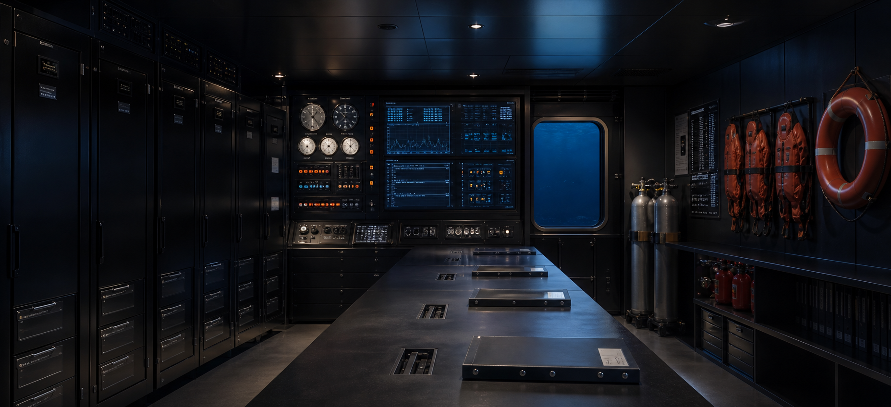

第三区画ログ
潮流記録の再確認後、確定時刻を03:16へ訂正しました。

SAFETY LOG
観測設備の点検、欠測、訂正記録についてお知らせします。公開データは、設備状態と潮流条件を確認したうえで更新します。
潮流記録の再確認後、確定時刻を03:16へ訂正しました。
水圧と音響記録は同時刻の設備状態と合わせて保存されています。
点検中の欠測は異常値ではなく、保守作業記録として扱います。
観測線の切替と復帰は、管制担当と設備担当が別々に記録します。
通信遅延は、欠測とは別の保守区分で保存します。
訂正時は、対象区画、時刻、理由を残します。